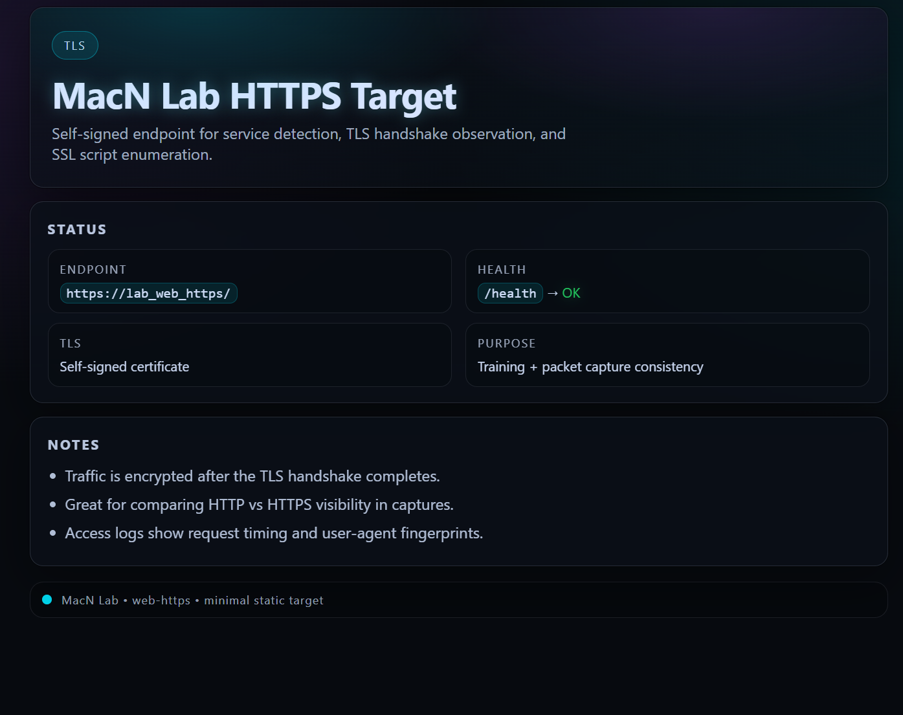
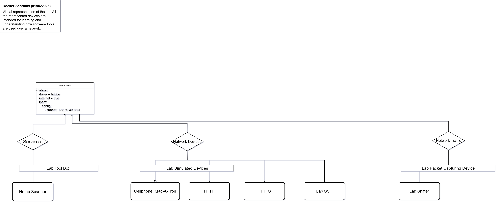

@
M
a
c
N
_
i
T
Home
About
Thoughts
Tools
Contact
Full Stack Thoughts
Cyber Thoughts...
Back-End
Cyber Thoughts...
MacN the Full Stack
Loading Cyber Notes and Thoughts...
Cyber Thoughts
Sandbox Notes
S
Services
N
Network
PC
Packet Capture
CD
Cellular Device
Web
Web HTTP / HTTPS
The HTTPS Sandbox Screenshot

HTTPS Sandbox - Frontend Screenshot
Docker Sandbox Relationship Diagram

Docker Sandbox - Relationship Diagram